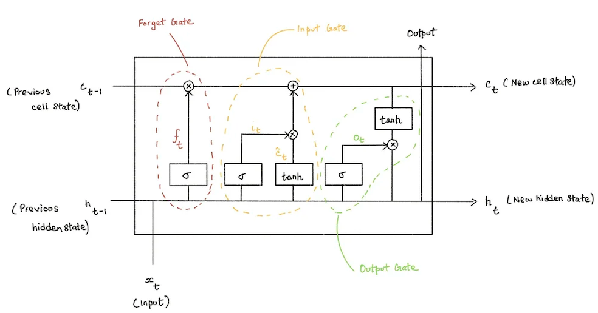
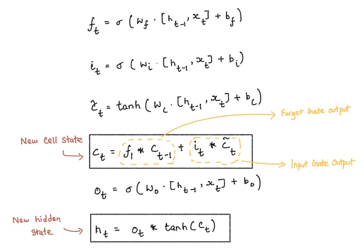

Long Short-Term Memory Networks (LSTMs)
AI Deep Learning Neural Networks
Oct 10, 2025
Neural networks are computational models inspired by the human brain, designed to recognize patterns and relationships in data. While traditional architectures perform well on fixed-size inputs, they struggle when information needs to be remembered over time.
Tasks such as language modeling, speech recognition, and time-series prediction require models to capture long-range dependencies—something standard neural networks are not designed to handle effectively.
The Limitation of Traditional Neural Networks
Feedforward neural networks and basic recurrent neural networks (RNNs) have difficulty retaining information from earlier inputs when processing long sequences. As the sequence grows, important signals tend to fade or explode during training, making learning unstable and ineffective.
This limitation makes them poorly suited for problems where context from the distant past matters.
What LSTMs Solve
Long Short-Term Memory (LSTM) networks were designed specifically to address the problem of long-term dependency. Unlike traditional networks, LSTMs introduce a cell state that allows information to persist over long periods of time.
Instead of trying to remember everything, LSTMs learn what information to keep, update, or discard through a set of gated mechanisms.
Inside an LSTM Cell
Each LSTM cell contains three gates that regulate the flow of information: the forget gate, the input gate, and the output gate. These gates are implemented using sigmoid activation functions and element-wise multiplication.
The sigmoid function outputs values between 0 and 1, where 0 means no information passes through and 1 means full passage of information.
Forget Gate
The forget gate determines which information from the previous cell state should be removed. It takes the previous hidden state and the current input as input and produces a value between 0 and 1 for each element of the cell state.
A value close to 1 means the information is retained, while a value close to 0 means it is discarded.
Input Gate
The input gate controls what new information is added to the cell state. It consists of two components:
- A sigmoid layer that decides which parts of the cell state should be updated.
- A tanh layer that generates candidate values, representing new information that could be added to the state.
The cell state is updated by combining the retained old information with the new candidate values, scaled by how much influence they should have.
Output Gate
The output gate determines what information from the cell state is exposed as the hidden state. A sigmoid layer selects which parts of the cell state will be output.
The cell state is passed through a tanh activation to constrain values between -1 and 1, and then multiplied by the output gate’s decision. This ensures that only relevant information is propagated forward.
By explicitly controlling memory through gates, LSTMs enable neural networks to learn long-term dependencies more effectively. This makes them a foundational architecture for sequence-based tasks in deep learning.
Notes like these help bridge theory and implementation—understanding how models work before deciding where they should be used.